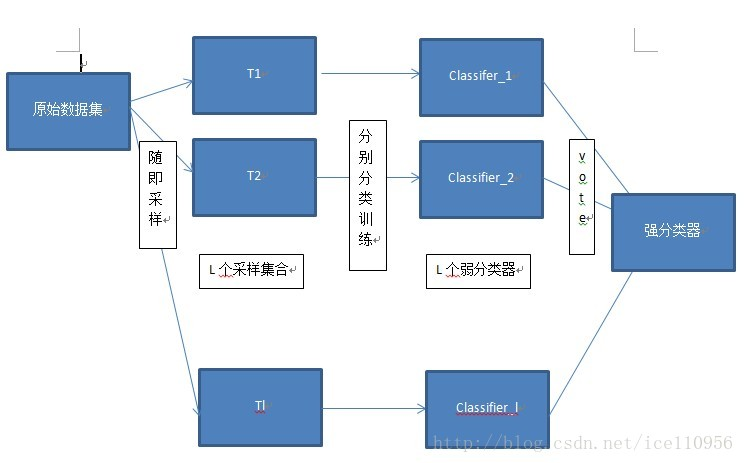
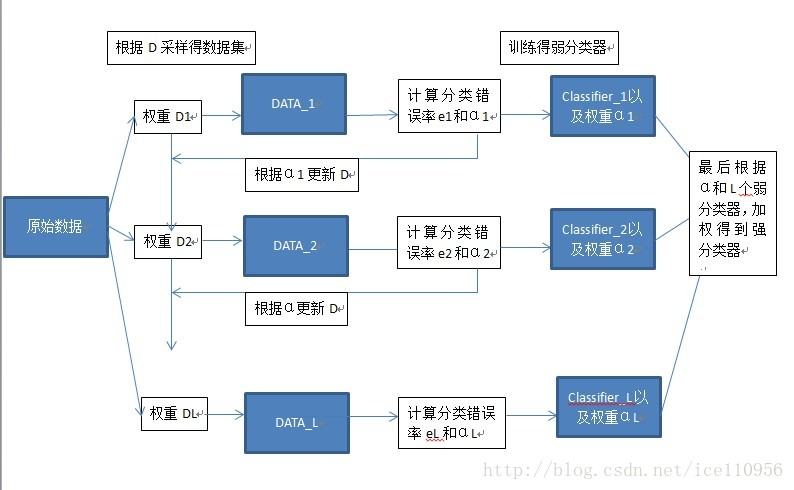

集成学习¶
在机器学习的有监督学习算法中，我们的目标是学习出一个稳定的且在各个方面表现都较好的模型，但实际情况往往不这么理想，有时我们只能得到多个有偏好的模型（弱监督模型，在某些方面表现的比较好）。集成学习就是组合这里的多个弱监督模型以期得到一个更好更全面的强监督模型，集成学习潜在的思想是即便某一个弱分类器得到了错误的预测，其他的弱分类器也可以将错误纠正回来。 集成学习在各个规模的数据集上都有很好的策略。 数据集大：划分成多个小数据集，学习多个模型进行组合 数据集小：利用Bootstrap方法进行抽样，得到多个数据集，分别训练多个模型再进行组合
集成学习主要有两类： 1. Bagging
- Boosting
Bagging算法是这样做的：每个分类器都随机从原样本中做有放回的采样，然后分别在这些采样后的样本上训练分类器，然后再把这些分类器组合起来。简单的多数投票一般就可以。其代表算法是随机森林。
Boosting的意思是这样，他通过迭代地训练一系列的分类器，每个分类器采用的样本分布都和上一轮的学习结果有关。其代表算法是AdaBoost, GBDT。
一个热门问答：
为什么xgboost/gbdt在调参时为什么树的深度很少就能达到很高的精度？¶
Boosting主要关注降低偏差，因此Boosting能基于泛化性能相当弱的学习器构建出很强的集成；Bagging主要关注降低方差，因此它在不剪枝的决策树、神经网络等学习器上效用更为明显。
对于Bagging算法来说，由于我们会并行地训练很多不同的分类器的目的就是降低这个方差(variance) ,因为采用了相互独立的基分类器多了以后，h的值自然就会靠近。所以对于每个基分类器来说，目标就是如何降低这个偏差（bias),所以我们会采用深度很深甚至不剪枝的决策树。
对于Boosting来说，每一步我们都会在上一轮的基础上更加拟合原数据，所以可以保证偏差（bias）,所以对于每个基分类器来说，问题就在于如何选择variance更小的分类器，即更简单的分类器，所以我们选择了深度很浅的决策树。
一、Bagging¶
bagging的名称来源于 （ Bootstrap Aggregating ），意思是自助抽样集成，这种方法将训练集分成m个新的训练集，然后在每个新训练集上构建一个模型，各自不相干，最后预测时我们将这个m个模型的结果进行整合，得到最终结果。整合方式就是：分类问题用majority voting，回归用均值。
因此Bagging使用的抽样方法是Bootstrap方法，即自助法，本质上就是一个有放回的随机抽样问题。 每一个样本在每一次抽的时候有同样的概率\frac{1}{N}被抽中。没被抽中的概率为1-\frac{1}{N}，一共抽了N次，即1-(\frac{1}{N})^N当N趋于无穷时，由高等数学学的极限的求解可以算出来是\frac{1}{e}，大概为36.8%，这些留下来的⅓的样本可以作为验证集，这样的方式叫做包外估计(out of bag estimate)
输入为样本集D={(x,y1),(x2,y2),...(xm,ym)}，弱学习器算法, 弱分类器迭代次数T。
输出为最终的强分类器f(x) 1）对于t=1,2…,T:
a)对训练集进行第t次随机采样，共采集m次，得到包含m个样本的采样集Dt b)用采样集D_t训练第t个弱学习器G_t(x) 2) 如果是分类算法预测，则T个弱学习器投出最多票数的类别或者类别之一为最终类别。如果是回归算法，T个弱学习器得到的回归结果进行算术平均得到的值为最终的模型输出。 
1.Random Forest算法¶
随机森林就是通过集成学习的思想将多棵树集成的一种算法，它的基本单元是决策树，而它的本质属于机器学习的一大分支——集成学习（Ensemble Learning）方法。随机森林的名称中有两个关键词，一个是“随机”，一个就是“森林”。“森林”我们很好理解，一棵叫做树，那么成百上千棵就可以叫做森林了，这样的比喻还是很贴切的，其实这也是随机森林的主要思想–集成思想的体现。
其实从直观角度来解释，每棵决策树都是一个分类器（假设现在针对的是分类问题），那么对于一个输入样本，N棵树会有N个分类结果。而随机森林集成了所有的分类投票结果，将投票次数最多的类别指定为最终的输出，这就是一种最简单的 Bagging 思想。但是在构造决策树的时候，在节点找特征进行分裂的时候，并不是对所有特征找到能使得指标（如信息增益）最大的，而是在特征中随机抽取一部分特征，在抽到的特征中间找到最优解，应用于节点，进行分裂。随机森林的方法由于有了bagging，也就是集成的思想在，实际上相当于对于样本和特征都进行了采样（如果把训练数据看成矩阵，就像实际中常见的那样，那么就是一个行和列都进行采样的过程），所以可以避免过拟合。
随机森林算法的特点： - 在当前所有算法中，具有极好的准确率/It is unexcelled in accuracy among current algorithms； - 能够有效地运行在大数据集上/It runs efficiently on large data bases； - 能够处理具有高维特征的输入样本，而且不需要降维/It can handle thousands of input variables without variable deletion； - 能够评估各个特征在分类问题上的重要性/It gives estimates of what variables are important in the classification； - 在生成过程中，能够获取到内部生成误差的一种无偏估计/It generates an internal unbiased estimate of the generalization error as the forest building progresses； - 对于缺省值问题也能够获得很好得结果/It has an effective method for estimating missing data and maintains accuracy when a large proportion of the data are missing
随机森林分类效果（错误率）与两个因素有关： - 森林中任意两棵树的相关性：相关性越大，错误率越大； - 森林中每棵树的分类能力：每棵树的分类能力越强，整个森林的错误率越低。
Boosting¶
Boosting与Bagging的区别就是取样方式不同，Bagging采用均匀取样，而Boosting根据错误率来取样，因此Boosting的分类精度要优于Bagging。。Bagging的训练集的选择是随机的，各轮训练集之间相互独立，而Boostlng的各轮训练集的选择与前面各轮的学习结果有关；Bagging的各个预测函数没有权重，而Boosting是有权重的；Bagging的各个预测函数可以并行生成，而Boosting的各个预测函数只能顺序生成。对于象神经网络这样极为耗时的学习方法。Bagging可通过并行训练节省大量时间开销。很好理解吧。
